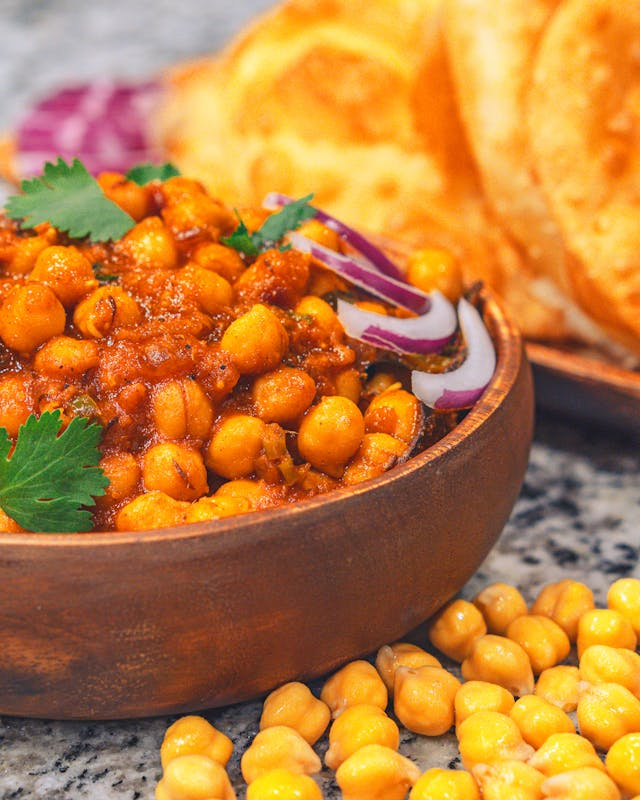

Home
Butter Chickpeas

Stewed chickpeas in a fragrant, spicy sauce made with garam masala, fresh ginger, tomato and coconut milk.
Ingredients
- 4 Tbsp unsalted butter
- 1 yellow onion
- 1/2 tsp + 1/2 tsp salt, divided
- 1/2 cup tomato paste
- 1/2 serrano chile, finely chopped
- 1 Tbsp grated ginger
- 2 14.5oz cans chickpeas, drained and rinsed
- 1/8 tsp baking soda
- 1 tsp garam masala
- 1 tsp ground cumin
- 1 tsp ground Kashmiri chili powder, or alternatively: 3/4 tsp paprika + 1/4 tsp cayenne
- 1 cup whole fat coconut milk
- optional cilantro for garnish
- serve over rice/with naan
Directions
- In a large, high-sided skillet over medium heat, melt butter. Add onion and 1/2 tsp salt, stirring occasionally until softened, about 7 minutes.
- Add tomato paste and stir constantly until darkened, about 4 to 5 minutes. Add chile and ginger, continue stirring, until fragrant and tomato paste begins to stick to pan, about 1 minute more.
- Add chickpeas and baking soda, and stir to combine. Then add garam masala, cumin, and chile powder, stirring frequently, until fragrant and incorporated, about 30 seconds.
- Stir in coconut milk, remaining 1/2 tsp salt, and 1 cup water. Bring to a simmer over medium-high heat, then reduce heat to low and continue to simmer, stirring occasionally, until sauce is reduced, 10 to 15 minutes.
- Season with more salt if needed. Garnish wish cilantro.